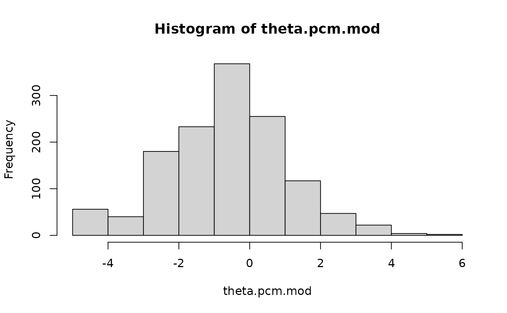
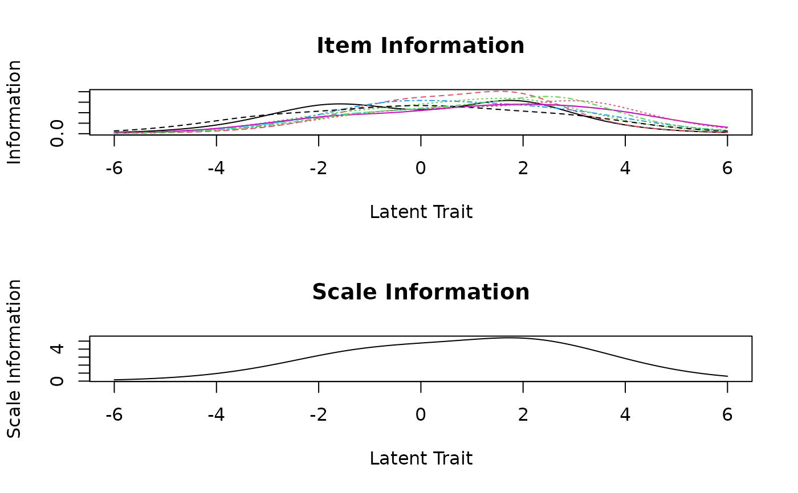
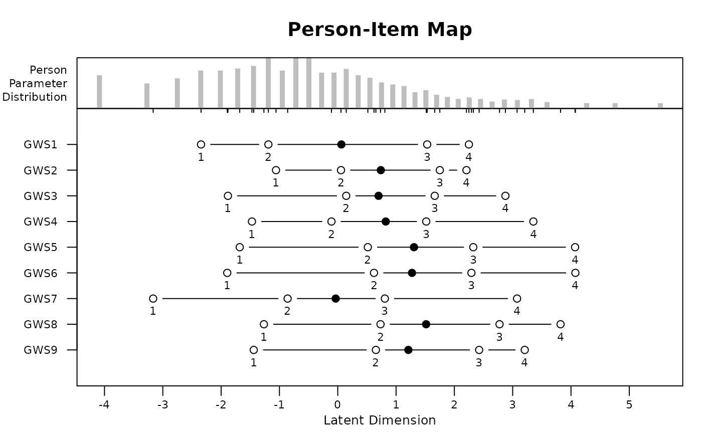

Rasch analysis of polytomous items with the partial credit model
RaschItemAnalysis.RdBasic Rasch analysis of polytomous items using the partial credit model. This function is a wrapper for the PCM() function of the eRm package. The purpose of the function is to simplify the Rasch analysis process and to produce the output that users most typically want.
Examples
# Lowest response category must be scored as 0
work_stress0 <- work_stress[1:9] - 1
## Fit the partial credit model
out <- RaschItemAnalysis(work_stress0)


#> Separation Reliability: 0.8886
#>
#> Observed Variance: 2.637 (Squared Standard Deviation)
#> Mean Square Measurement Error: 0.2939 (Model Error Variance)

#> Score group 1:
#> mean obs mean exp std.res sig
#> GWS1 1.0180 1.0308 -0.5024
#> GWS2 0.4662 0.4652 0.0448
#> GWS3 0.6617 0.6643 -0.1181
#> GWS4 0.6180 0.5947 1.0001
#> GWS5 0.5669 0.5690 -0.0991
#> GWS6 0.6105 0.6159 -0.2588
#> GWS7 1.1338 1.1355 -0.0685
#> GWS8 0.4391 0.4539 -0.7332
#> GWS9 0.5278 0.5007 1.3174
#>
#> Score group 2:
#> mean obs mean exp std.res sig
#> GWS1 2.3005 2.2862 0.5508
#> GWS2 1.8847 1.8854 -0.0251
#> GWS3 1.9044 1.9015 0.1021
#> GWS4 1.9150 1.9386 -0.8313
#> GWS5 1.6388 1.6325 0.2457
#> GWS6 1.6313 1.6258 0.2134
#> GWS7 2.3490 2.3462 0.1083
#> GWS8 1.5068 1.4900 0.6438
#> GWS9 1.5660 1.5903 -0.9045
#>
#>
#>
#> Item targets:
#>
#> GWS1 GWS2 GWS3 GWS4 GWS5 GWS6 GWS7 GWS8 GWS9
#> 0.894 0.691 0.727 -0.820 1.295 1.168 -0.848 2.103 1.587
#>
#>
#> Item1 Item2 gamma se pvalue padj.BH sig lower upper
#> 1 GWS1 GWS2 -0.0018 0.0470 0.9697 1.0000 -0.0940 0.0904
#> 2 GWS1 GWS3 -0.0675 0.0462 0.1441 1.0000 -0.1581 0.0231
#> 3 GWS1 GWS4 0.0332 0.0458 0.4688 1.0000 -0.0566 0.1229
#> 4 GWS1 GWS5 -0.0331 0.0503 0.5113 1.0000 -0.1317 0.0656
#> 5 GWS1 GWS6 0.0753 0.0501 0.1331 1.0000 -0.0229 0.1734
#> 6 GWS1 GWS7 0.1153 0.0453 0.0109 0.7852 0.0265 0.2040
#> 7 GWS1 GWS8 -0.0540 0.0493 0.2731 1.0000 -0.1505 0.0426
#> 8 GWS1 GWS9 -0.0525 0.0487 0.2805 1.0000 -0.1479 0.0429
#> 9 GWS2 GWS3 -0.0403 0.0478 0.3998 1.0000 -0.1340 0.0535
#> 10 GWS2 GWS4 -0.0121 0.0454 0.7896 1.0000 -0.1010 0.0768
#> 11 GWS2 GWS5 -0.0039 0.0496 0.9365 1.0000 -0.1011 0.0932
#> 12 GWS2 GWS6 -0.1081 0.0506 0.0326 1.0000 -0.2072 -0.0090
#> 13 GWS2 GWS7 -0.0426 0.0465 0.3599 1.0000 -0.1337 0.0486
#> 14 GWS2 GWS8 0.0273 0.0509 0.5922 1.0000 -0.0725 0.1270
#> 15 GWS2 GWS9 0.0501 0.0465 0.2814 1.0000 -0.0411 0.1414
#> 16 GWS3 GWS4 -0.0900 0.0467 0.0538 1.0000 -0.1815 0.0015
#> 17 GWS3 GWS5 0.0654 0.0484 0.1768 1.0000 -0.0295 0.1604
#> 18 GWS3 GWS6 0.0869 0.0497 0.0804 1.0000 -0.0105 0.1843
#> 19 GWS3 GWS7 -0.0198 0.0468 0.6712 1.0000 -0.1115 0.0718
#> 20 GWS3 GWS8 -0.0014 0.0507 0.9784 1.0000 -0.1007 0.0979
#> 21 GWS3 GWS9 0.1074 0.0487 0.0275 1.0000 0.0119 0.2028
#> 22 GWS4 GWS5 0.0069 0.0483 0.8863 1.0000 -0.0877 0.1016
#> 23 GWS4 GWS6 -0.0401 0.0499 0.4222 1.0000 -0.1379 0.0578
#> 24 GWS4 GWS7 -0.0547 0.0474 0.2485 1.0000 -0.1477 0.0382
#> 25 GWS4 GWS8 0.0450 0.0502 0.3696 1.0000 -0.0533 0.1434
#> 26 GWS4 GWS9 -0.0017 0.0463 0.9711 1.0000 -0.0923 0.0890
#> 27 GWS5 GWS6 0.0126 0.0535 0.8146 1.0000 -0.0924 0.1175
#> 28 GWS5 GWS7 0.0046 0.0481 0.9240 1.0000 -0.0898 0.0990
#> 29 GWS5 GWS8 0.0333 0.0513 0.5167 1.0000 -0.0672 0.1337
#> 30 GWS5 GWS9 -0.0339 0.0497 0.4956 1.0000 -0.1313 0.0636
#> 31 GWS6 GWS7 -0.0037 0.0493 0.9409 1.0000 -0.1003 0.0930
#> 32 GWS6 GWS8 -0.0185 0.0551 0.7376 1.0000 -0.1264 0.0895
#> 33 GWS6 GWS9 0.0372 0.0501 0.4573 1.0000 -0.0609 0.1354
#> 34 GWS7 GWS8 0.0345 0.0495 0.4855 1.0000 -0.0625 0.1315
#> 35 GWS7 GWS9 -0.0603 0.0482 0.2107 1.0000 -0.1547 0.0341
#> 36 GWS8 GWS9 -0.0551 0.0498 0.2681 1.0000 -0.1527 0.0424
#>
#> Item1 Item2 gamma se pvalue padj.BH sig lower upper
#> 1 GWS2 GWS1 -0.0153 0.0468 0.7437 1 -0.1070 0.0764
#> 2 GWS3 GWS1 -0.0626 0.0459 0.1723 1 -0.1525 0.0273
#> 3 GWS3 GWS2 -0.0044 0.0475 0.9270 1 -0.0975 0.0888
#> 4 GWS4 GWS1 0.0231 0.0451 0.6081 1 -0.0652 0.1115
#> 5 GWS4 GWS2 -0.0204 0.0447 0.6480 1 -0.1081 0.0673
#> 6 GWS4 GWS3 -0.0993 0.0462 0.0315 1 -0.1898 -0.0088
#> 7 GWS5 GWS1 -0.0368 0.0493 0.4557 1 -0.1334 0.0598
#> 8 GWS5 GWS2 0.0182 0.0490 0.7096 1 -0.0778 0.1143
#> 9 GWS5 GWS3 0.0626 0.0469 0.1821 1 -0.0294 0.1546
#> 10 GWS5 GWS4 0.0335 0.0478 0.4835 1 -0.0602 0.1271
#> 11 GWS6 GWS1 0.0877 0.0509 0.0851 1 -0.0121 0.1875
#> 12 GWS6 GWS2 -0.0653 0.0505 0.1963 1 -0.1644 0.0338
#> 13 GWS6 GWS3 0.1056 0.0494 0.0326 1 0.0087 0.2025
#> 14 GWS6 GWS4 -0.0097 0.0496 0.8448 1 -0.1069 0.0875
#> 15 GWS6 GWS5 0.0135 0.0537 0.8020 1 -0.0918 0.1187
#> 16 GWS7 GWS1 0.1098 0.0456 0.0161 1 0.0204 0.1992
#> 17 GWS7 GWS2 -0.0275 0.0455 0.5462 1 -0.1167 0.0617
#> 18 GWS7 GWS3 -0.0287 0.0469 0.5412 1 -0.1206 0.0633
#> 19 GWS7 GWS4 -0.0477 0.0472 0.3119 1 -0.1403 0.0448
#> 20 GWS7 GWS5 -0.0115 0.0480 0.8100 1 -0.1056 0.0825
#> 21 GWS7 GWS6 -0.0227 0.0495 0.6466 1 -0.1198 0.0744
#> 22 GWS8 GWS1 -0.0469 0.0501 0.3489 1 -0.1450 0.0512
#> 23 GWS8 GWS2 0.0705 0.0497 0.1561 1 -0.0269 0.1679
#> 24 GWS8 GWS3 0.0171 0.0510 0.7382 1 -0.0829 0.1170
#> 25 GWS8 GWS4 0.0743 0.0501 0.1376 1 -0.0238 0.1725
#> 26 GWS8 GWS5 0.0405 0.0511 0.4272 1 -0.0595 0.1406
#> 27 GWS8 GWS6 -0.0133 0.0550 0.8085 1 -0.1211 0.0944
#> 28 GWS8 GWS7 0.0527 0.0496 0.2883 1 -0.0446 0.1499
#> 29 GWS9 GWS1 -0.0570 0.0476 0.2318 1 -0.1503 0.0364
#> 30 GWS9 GWS2 0.0273 0.0469 0.5600 1 -0.0646 0.1192
#> 31 GWS9 GWS3 0.0849 0.0491 0.0839 1 -0.0114 0.1811
#> 32 GWS9 GWS4 0.0157 0.0461 0.7338 1 -0.0746 0.1060
#> 33 GWS9 GWS5 -0.0453 0.0503 0.3676 1 -0.1440 0.0533
#> 34 GWS9 GWS6 0.0113 0.0504 0.8231 1 -0.0876 0.1101
#> 35 GWS9 GWS7 -0.0628 0.0480 0.1906 1 -0.1568 0.0312
#> 36 GWS9 GWS8 -0.0824 0.0498 0.0981 1 -0.1801 0.0153
#> Error in uniroot(s.theta(m - 0.25), c(-6, 6)): f() values at end points not of opposite sign
ls(out)
#> Warning: ‘out’ converted to character string
#> Error in as.environment(pos): no item called "out" on the search list
out$Infit.outfit
#> Error: object 'out' not found